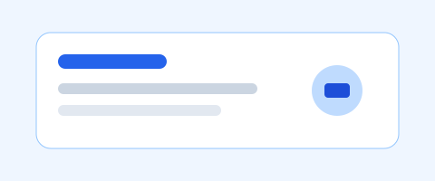

Créer son dépôt et sa première page structurée
Page d’accueil HTML : en-tête, navigation, contenu principal et pied de page.
À propos
Ce projet sert à gérer les modifications d’une page web avec Git, puis à l’envoyer plus tard sur GitHub.

Ressources
Quelques liens utiles pour continuer :